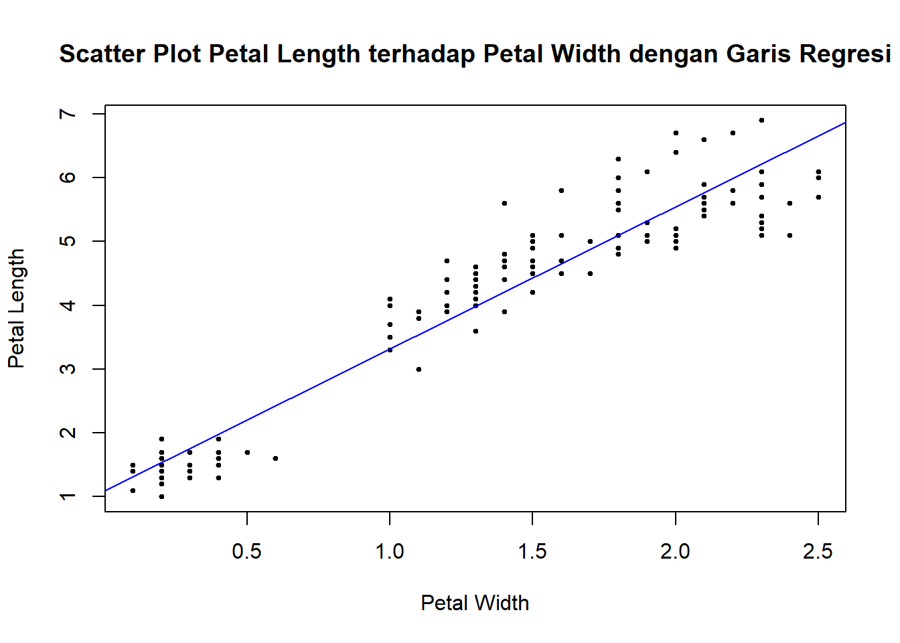

library(readr)
library(readxl)(Pertemuan 1) Review R dan Regresi Linear Sederhana
R Review and Simple Linear Regression
Kembali ke Model Linier
Review R
Sebelum masuk ke materi, mari kita review kembali mengenai R dan RStudio. Pastikan Anda sudah menginstall keduanya. Jika belum, maka sebaiknya diinstall terlebih dahulu di website berikut:
Instalasi Library
Salah satu alasan kenapa R sangat bermanfaat dan sering dipakai untuk melakukan analisis data adalah karena kemudahan pengguna dalam menginstall package/library. R memiliki repository besar yang bernama CRAN (Comprehensive R Archive Network) yang menyimpan sangat banyak library yang dapat digunakan untuk mengaplikasikan metode-metode statistika, dimulai dari yang paling sederhana sampai yang paling kompleks. Dan untuk menginstall library di dalam CRAN ini, cukup menggunakan fungsi
install.packages()untuk melakukan pengunduhan, diikuti dengan
library()untuk load library yang diinginkan. Setelah itu, fungsi-fungsi yang terdapat pada library yang diunduh dapat langsung digunakan.
Untuk permulaan, silakan unduh terlebih dahulu package tidyverse, karena package ini memiliki banyak library-library penting yang diperlukan ke depannya.
install.packages("tidyverse")Membuka Data
Untuk menganalisis data, tentu suatu program harus bisa membuka data yang ingin dianalisis terlebih dahulu. Pada R, pembacaan data ini bisa dilakukan dengan menggunakan library readr untuk file .csv dan library readxl untuk file .xlsx atau .xls. Kedua library ini sudah terinstall otomatis saat mengunduh package tidyverse.
Berikutnya, untuk membuka file, silakan run
data1 <- read_csv("path/menuju/ke/file.csv") # untuk csv
data2 <- read_excel("path/menuju/ke/file.xlsx") # untuk xlsxPada pertemuan ini, akan digunakan file iris yang sudah terdapat langsung di R sebagai contoh penggunaan data.
data(iris)
df <- irisUntuk melihat keseluruhan data:
View(df)Untuk melihat beberapa entri pertama dan beberapa entri terakhir pada data:
head(df, 10) Sepal.Length Sepal.Width Petal.Length Petal.Width Species
1 5.1 3.5 1.4 0.2 setosa
2 4.9 3.0 1.4 0.2 setosa
3 4.7 3.2 1.3 0.2 setosa
4 4.6 3.1 1.5 0.2 setosa
5 5.0 3.6 1.4 0.2 setosa
6 5.4 3.9 1.7 0.4 setosa
7 4.6 3.4 1.4 0.3 setosa
8 5.0 3.4 1.5 0.2 setosa
9 4.4 2.9 1.4 0.2 setosa
10 4.9 3.1 1.5 0.1 setosatail(df, 10) Sepal.Length Sepal.Width Petal.Length Petal.Width Species
141 6.7 3.1 5.6 2.4 virginica
142 6.9 3.1 5.1 2.3 virginica
143 5.8 2.7 5.1 1.9 virginica
144 6.8 3.2 5.9 2.3 virginica
145 6.7 3.3 5.7 2.5 virginica
146 6.7 3.0 5.2 2.3 virginica
147 6.3 2.5 5.0 1.9 virginica
148 6.5 3.0 5.2 2.0 virginica
149 6.2 3.4 5.4 2.3 virginica
150 5.9 3.0 5.1 1.8 virginicaUntuk melihat rangkuman five-point summary, gunakan:
summary(df) Sepal.Length Sepal.Width Petal.Length Petal.Width
Min. :4.300 Min. :2.000 Min. :1.000 Min. :0.100
1st Qu.:5.100 1st Qu.:2.800 1st Qu.:1.600 1st Qu.:0.300
Median :5.800 Median :3.000 Median :4.350 Median :1.300
Mean :5.843 Mean :3.057 Mean :3.758 Mean :1.199
3rd Qu.:6.400 3rd Qu.:3.300 3rd Qu.:5.100 3rd Qu.:1.800
Max. :7.900 Max. :4.400 Max. :6.900 Max. :2.500
Species
setosa :50
versicolor:50
virginica :50
dan untuk melihat statistik-statistik deskriptif, gunakan library psych:
install.packages("psych")diikuti dengan
library(psych)
describe(df) vars n mean sd median trimmed mad min max range skew
Sepal.Length 1 150 5.84 0.83 5.80 5.81 1.04 4.3 7.9 3.6 0.31
Sepal.Width 2 150 3.06 0.44 3.00 3.04 0.44 2.0 4.4 2.4 0.31
Petal.Length 3 150 3.76 1.77 4.35 3.76 1.85 1.0 6.9 5.9 -0.27
Petal.Width 4 150 1.20 0.76 1.30 1.18 1.04 0.1 2.5 2.4 -0.10
Species* 5 150 2.00 0.82 2.00 2.00 1.48 1.0 3.0 2.0 0.00
kurtosis se
Sepal.Length -0.61 0.07
Sepal.Width 0.14 0.04
Petal.Length -1.42 0.14
Petal.Width -1.36 0.06
Species* -1.52 0.07Regresi Linear Sederhana
Regresi linear sederhana adalah metode statistika yang digunakan untuk memodelkan hubungan antara dua variabel \(X\) dan \(Y\), dengan asumsi bahwa hubungannya berupa linear, yaitu
\[ Y = \beta_0+\beta_1X + \varepsilon \]
dimana \(\varepsilon\) adalah variabel error yang bersifat acak, \(X\) adalah variabel independen atau variabel bebas, \(Y\) adalah variabel dependen atau variabel respon.
Dalam melakukan pemodelan tersebut, tentu kita dapat menggunakan sembarang distribusi untuk variabel error \(\varepsilon\) dan sembarang angka \(\beta_0\) dan \(\beta_1\) pada persamaan. Meskipun demikian, melakukan hal ini belum tentu sesuai dengan data yang dimiliki. Oleh karena itu, tugas sebenarnya adalah menentukan berapa angka atau distribusi yang paling tepat untuk menggantikan \(\beta_0\), \(\beta_1\), dan \(\varepsilon\).
Estimasi untuk distribusi dari suatu variabel acak dapat menjadi kesulitan tersendiri, terutama jika terdapat parameter lain. Oleh karena itu, biasanya distribusi dari \(\varepsilon\) diasumsikan mengikuti distribusi tertentu. Pada regresi linear sederhana, diasumsikan bahwa
\[ \varepsilon_i \sim N(0,\sigma^2) \]
dimana \(\sigma^2\) adalah bilangan positif yang berhingga dan konstan, yang menyatakan variansi dari error. Dengan asumsi demikian, maka tugas kita sekarang adalah menentukan angka terbaik untuk \(\beta_0\), \(\beta_1\), dan \(\sigma^2\). Dengan kata lain, tugas kita adalah melakukan estimasi pada parameter-parameter tersebut.
Karena sudah diasumsikan bahwa \(\varepsilon\) mengikuti distribusi normal, maka metode-metode parametrik tentu dapat dilakukan, dan bisa diperoleh estimator untuk \(\beta_0\) dan \(\beta_1\), yaitu \(\hat{\beta}_0\) dan \(\hat{\beta}_1\). Dari estimator-estimator yang digunakan, terdapat estimator OLS (Ordinary Least Squares) yang paling sering digunakan, karena sifat BLUE (Best Linear Unbiased Estimator) yang dimilikinya.
Untuk memperoleh estimator ini, tentu metode manual dapat dilakukan. Meskipun demikian, dengan data yang besar, proses perhitungan ini akan memakan waktu yang lama. Oleh karena itu, dapat digunakan R untuk melakukan ini.
Kita akan mengambil contoh data iris yang kita miliki. Misal, kita ingin memodelkan hubungan linear antara Petal.Length sebagai variabel respon dengan Petal.Width sebagai variabel bebas. Maka dapat digunakan fungsi lm sebagai berikut:
model <- lm(df$Petal.Length ~ df$Petal.Width)
# ATAU
model <- lm(Petal.Length ~ Petal.Width, data = df)Kemudian gunakan fungsi summary untuk memperoleh hasil pemodelan.
summary(model)
Call:
lm(formula = Petal.Length ~ Petal.Width, data = df)
Residuals:
Min 1Q Median 3Q Max
-1.33542 -0.30347 -0.02955 0.25776 1.39453
Coefficients:
Estimate Std. Error t value Pr(>|t|)
(Intercept) 1.08356 0.07297 14.85 <2e-16 ***
Petal.Width 2.22994 0.05140 43.39 <2e-16 ***
---
Signif. codes: 0 '***' 0.001 '**' 0.01 '*' 0.05 '.' 0.1 ' ' 1
Residual standard error: 0.4782 on 148 degrees of freedom
Multiple R-squared: 0.9271, Adjusted R-squared: 0.9266
F-statistic: 1882 on 1 and 148 DF, p-value: < 2.2e-16Terdapat beberapa hal yang bisa disimpulkan dari output yang didapatkan:
- Diperoleh hasil estimasi untuk \(\beta_0\) dan \(\beta_1\) yang bisa dilihat dari bagian
Coefficientspada output. Untuk \(\beta_0\) estimasinya terdapat pada baris(Intercept), yaitu \(\hat{\beta}_0=1.08356\), dan untuk \(\beta_1\) estimasinya terdapat pada barisPetal.Width, yaitu \(\hat{\beta}_1=2.22994\). Akibatnya, persamaan modelnya adalah \(Y = 1.08356 + 2.22994X + \varepsilon\). - Kedua parameter yang diestimasi signifikan berbeda dari nol, karena p-value (terletak di kolom
Pr(>|t|)) untuk keduanya sangat kecil (lebih kecil dari 0.05). Selain itu, untuk mempermudah observasi, bisa juga dilihat dari simbol***yang terdapat di samping p-value. - Estimasi untuk standar deviasi dari error, yaitu \(\sigma\), terdapat pada bagian
Residual standard error, yaitu \(s=0.4782\). Estimasi ini didapat menggunakan derajat bebas 148, yang berarti \(n-k-1=148 \rightarrow n = 149+k\). Karena hanya terdapat 1 variabel independen, berarti \(k=1\), sehingga banyaknya data yang digunakan pada regresi adalah \(n=150\). - Koefisien determinasi \(R^2\) model yaitu \(0.9271\), yang berarti model dapat menjelaskan \(92.71%\) variasi pada data. Ini mengindikasikan goodness-of-fit model. Selain itu, koefisien korelasi \(r\) juga dapat dihitung dengan mengambil akar dari \(R^2\).
- Goodness-of-fit pada poin sebelumnya didukung oleh sangat kecilnya p-value dari F-statistic.
- SSR dapat dihitung lewat F-statistic dan RSE, atau lewat \(R^2\) dan RSE. Ingat kembali rumus-rumus kedua statistik tersebut dan juga hubungan keduanya.
Koefisien Variasi
Untuk menghitung koefisien variasi, ingat rumus
\[ CV = 100\cdot\frac{s}{\bar{y}} \]
dimana \(\bar{y}\) adalah mean dari variabel respon. Untuk regresi yang kita miliki, koefisien variasinya dapat dihitung dengan
s <- sigma(model)
ybar <- mean(df$Petal.Length)
CV <- 100*(s/ybar)
CV[1] 12.72501Interval Kepercayaan
Selanjutnya, interval kepercayaan untuk mean dari variabel dependen \(Y\) untuk suatu observasi \(X=x\) dapat dihitung dengan rumus
\[ \hat{y} \pm t_{\alpha/2}s\sqrt{\frac{1}{n}+\frac{(x-\bar{x})^2}{\sum_{i=1}^{n}(x_i-\bar{x})^2}} \]
Untuk menghitung ini dengan R, misal secara khusus untuk observasi \(X = 2\) dengan signifikansi \(\alpha = 0.05\), boleh dihitung secara manual sebagai berikut:
x <- 2
yhat <- unname(coef(model)[1] + coef(model)[2]*x)
dof = df.residual(model)
t <- qt(1 - 0.05 / 2, df = dof)
s <- sigma(model)
n <- dof + 2
xbar <- mean(df$Petal.Width)
SSxx <- sum((df$Petal.Width - xbar)^2)
upper_bound <- yhat + t*s*sqrt(1/n + (x-xbar)^2/SSxx)
lower_bound <- yhat - t*s*sqrt(1/n + (x-xbar)^2/SSxx)lower_bound[1] 5.431339upper_bound[1] 5.655539atau langsung dari fungsi predict sebagai berikut:
predict(model,
newdata = data.frame(Petal.Width = 2),
interval = "confidence") fit lwr upr
1 5.543439 5.431339 5.655539Interval Prediksi
Jika sebelumnya merupakan interval kepercayaan untuk mean, selanjutnya interval prediksi untuk seorang individu yang memiliki data \(X=2\) dapat dihitung dengan rumus
\[ \hat{y} \pm t_{\alpha/2}s\sqrt{1+\frac{1}{n}+\frac{(x-\bar{x})^2}{\sum_{i=1}^{n}(x_i-\bar{x})^2}} \]
Secara manual pada R:
x <- 2
yhat <- unname(coef(model)[1] + coef(model)[2]*x)
dof = df.residual(model)
t <- qt(1 - 0.05 / 2, df = dof)
s <- sigma(model)
n <- dof + 2
xbar <- mean(df$Petal.Width)
SSxx <- sum((df$Petal.Width - xbar)^2)
upper_bound <- yhat + t*s*sqrt(1+1/n + (x-xbar)^2/SSxx)
lower_bound <- yhat - t*s*sqrt(1+1/n + (x-xbar)^2/SSxx)lower_bound[1] 4.59182upper_bound[1] 6.495058dan langsung dengan predict:
predict(model,
newdata = data.frame(Petal.Width = 2),
interval = "prediction") fit lwr upr
1 5.543439 4.59182 6.495058Visualisasi Garis Regresi
Untuk melihat hasil model yang diperoleh, dapat divisualisasikan menggunakan scatterplot. Pastikan bahwa variabel yang dijadikan sebagai sumbu-\(x\) adalah variabel bebas dan variabel yang dijadikan sebagai sumbu-\(y\) adalah variabel respon.
plot(
df$Petal.Width,
df$Petal.Length,
xlab = "Petal Width",
ylab = "Petal Length",
main = "Scatter Plot Petal Length terhadap Petal Width dengan Garis Regresi",
pch = 21,
cex = 0.5,
col = "black",
bg = "black"
)
abline(
model,
col = "blue",
lwd = 1
)